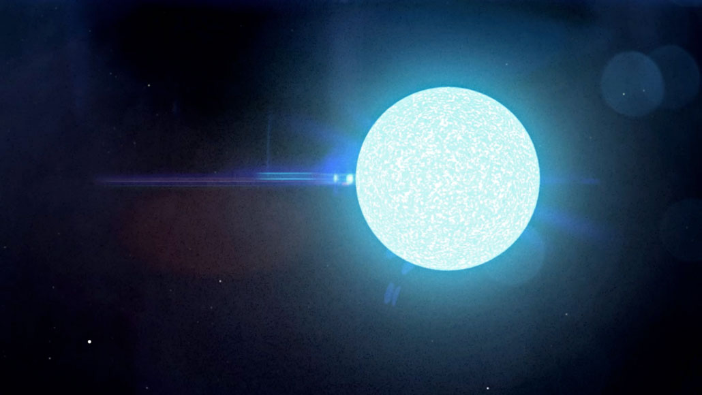

Neutron stars - the densest cosmic objects
What are neutron stars?
Neutron stars are among the densest and smallest known cosmic objects, formed as a result of a supernova. Their mass is comparable to that of the Sun but compressed to the size of a city, resulting in a matter density of several billion tons per cubic centimeter. Neutron stars possess enormous magnetic fields that cause the emission of intense beams of electromagnetic radiation, including X-rays and gamma rays. They are also a source of pulsars, which are regular pulses of radiation emitted as the neutron star rotates on its axis.
How do they form?
Neutron stars form as a result of a supernova, which occurs when the fuel inside a massive star is exhausted. During a supernova, enormous amounts of matter are ejected into space, while simultaneously, gravitational collapse occurs at the star's core. Gravity causes a tremendous mass to be compressed into unimaginably small sizes, forming a neutron star. This process is also responsible for releasing a tremendous amount of energy, visible as a bright explosion.
